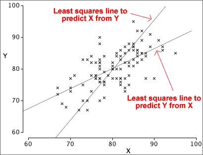
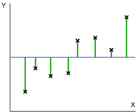

If you don't want to print now,
Definition
The correlation coefficient is usually defined by the formula
How does r relate to the shape of a scatterplot?
The following properties of r explain in general terms how its value is related to the strength of a relationship in any particular scatterplot.
 |
|
 |
|
 |
 |
| −1 ≤ r ≤ +1 | |
Correlation and nonlinear relationships
The correlation coefficient, r, is a good description of the strength of a relationship provided the crosses in a scatterplot of the data are not scattered round a curve. If the data are scattered round a curve, the relationship is called nonlinear and r may seriously underestimate its strength.

The correlation coefficient does not describe the strength of nonlinear relationships adequately.
Always look at a scatterplot first
Although the correlation coefficient is a good description of the strength of many relationships, it does not adequately describe others.
A scatterplot should always be examined to help assess whether there are features in the data that the correlation coefficient cannot describe.
The data sets below share the same value of r = 0.816 (and the same means and st devns for X and Y) but their scatterplots show that different conclusions should be drawn from them.

Exercises are only available online.
Exercises are only available online.
The notion of prediction
Notation and convention
If the variables can be classified as an explanatory variable and a response, we use the letter X to denote the explanatory variable and Y to denote the response.
Always draw the response variable, Y, on the vertical axis of a scatterplot and X on the horizontal axis.
Predicting the response
The correlation coefficient describes the strength of a relationship, but does not help you to predict Y from X.
A curve or straight line that is drawn close to the crosses on a scatterplot (by eye or by any other method) is called a regression line and can be used to 'read off' the y-value corresponding to any x.

Equation to describe a regression line
A regression line could be drawn 'by eye' through a scatterplot, but we restrict attention to simple mathematical functions
y = ƒ ( x )
since they are easier and more objective to use.
Linear model
Some relationships must be described by curves, but a straight line is an adequate description of many bivariate data sets.
y = b0 + b1 x
The constant b0 is the intercept of the line and describes the y-value when x is zero. The constant b1 is the line's slope; it describes the change in y when x increases by one.

The predicted response at any x-value is
 = b0 + b1 x
= b0 + b1 x
Fitted values
To assess how well a particular linear model fits any one of our data points, (xi, yi), we might consider how well the model would predict the y-value of the point,
 = b0 + b1 xi
= b0 + b1 xi
These predictions are called fitted values.
Residuals
The difference between the i'th fitted values and its actual y-value is called its residual.
ei = yi − 
The residuals describe the 'errors' that would have resulted from using the model to predict y from the x-values of our data points.

Note that the residuals are the vertical distances of the crosses to the line.
Aim of small residuals
The residuals from a linear model (vertical distances from the crosses to the line) indicate how closely the model's predictions match the actual responses in the data.

Small residuals are good, so the parameters b0 and b1 should be set to make them as small as possible.
Least squares
The size of the residuals is summarised by the residual sum of squares,

'Good' values for b0 and b1 can be objectively chosen to be the values that minimise the residual sum of squares. This is the method of least squares and the values of b0 and b1 are called least squares estimates.
The diagram below respresents the squared residuals as blue squares. The least squares estimates minimise the total blue area.

Formulae
The problem of minimising the residual sum of squares is not difficult mathematically, but you will rarely require or use the resulting formulae for b0 and b1 since spreadsheets, statistical programs and even scientific calculators will do the calculations for you. However, for completeness, the formulae are

Nonlinear relationships
A simple linear model is only appropriate when the cloud of crosses in a scatterplot of the data is regularly spread around a straight line. If the crosses are scattered round a curve, the relationship is called nonlinear and other models must be used.
Outliers
Another problem arises if there are outliers — observations that do not conform to the pattern and variability exhibited by the rest of the data. In a linear model, the most important type of outlier is a data point that lies at a distance from the line that would fit through the rest of the data.
The individual corresponding to any outlier should be carefully examined. Recording or transcription errors may be the cause. Alternatively, it may be possible to determine some distinguishing characteristic of the individual that underlies the unusual response measurement.
If an outlier is extreme enough, or if a special cause for its unusual behaviour can be found from outside information, the individual can be classified as aberrant and deleted from the data set.
It is important to look at any data set graphically before fitting a linear model to check that no curvature or outliers is present.
Detecting problems with the model
If outliers or curvature are present in a data set, they are often visible in a scatterplot of the response against the explanatory variable. However these features are usually clearer if the residuals are plotted against X rather than the original response.

Different lines are used to predict Y and to predict X
The least squares line for predicting Y from X,
y = b0 + b1 x
minimises the sum of squared vertical distances between the points on a scatterplot and the line. On the other hand, if we are interested in predicting X from Y using a line,
x = c0 + c1 y
the residuals are the horizontal distances between the points and the line, and least squares minimises their sum of squares.

Different lines minimise the sum of squares of horizontal and vertical distances.
About the two least squares lines
The two least squares lines can be written in terms of standardised variables,
| Equation of least squares line to predict Y from X | |
|---|---|
| Equation of least squares line to predict X from Y |
where r is the correlation coefficient between X and Y. Since r is always less than 1, the least squares line for predicting Y from X is the more horizontal (closer to being parallel to the x-axis) of the two lines.

Exercises are only available online.
Exercises are only available online.
Exercises are only available online.
Exercises are only available online.
Exercises are only available online.
Exercises are only available online.
Exercises are only available online.
Sums of squares
An alternative description of the strength of a relationship is often used when the variables can be treated as a response measurement that may be affected by an explanatory variable. This description depends on three values called sums of squares.
Residual sums of squares
The residual sum of squares is the sum of squared vertical distances between scatterplot crosses and the least squares line,

This sum of squares describes response variation that is unexplained by the explanatory variable X and the method of least squares positions the line to make it as small as possible.
SSResid = Σ residual2
Total sums of squares
The overall variation of the response, ignoring the existance of the explanatory variable, can be summarised by the sum of squared differences between the values and the overall mean response. These differences can be displayed on the scatterplot as vertical distances between the crosses and the mean response.

The total sum of squares is the sum of the squared green lines above.
SSTotal = Σ (y - overall mean)2
Explained sums of squares
The difference between these two sums of squares is called the explained sum of squares and describes the response variation that is explained by the explanatory variable,
SSExplained = SSTotal - SSResid
This sum of squares can be described graphically as the sum of squared distances between the least squares line and the overall mean, evaluated at each data point.

The explained sum of squares is the sum of the squared purple lines above.
SSExplained = Σ (LS prediction - overall mean)2
The relative sizes of the explained and residual sums of squares describe how much of the variability is explained by the model.
Simulation: Impurities in plastic
The next diagram shows simulated data that might describe the impurities recorded from batches of plastic produced at different temperatures (degrees Fahrenheit).
Click on the jittered dot plots on the right to display the different components as coloured vertical lines on the scatterplot.
Drag the slider to change the strength of the relationship between the impurities and temperature. Observe that:
The relative sizes of the sums of squares therefore hold information about the strength and significance of the relationship.
Coefficient of determination
We have seen that the total sum of squares can be split into two parts, the explained and residual sums of squares.
A useful summary statistic is the proportion of the total variation that is explained, the coefficient of determination, R2,

The coefficient of determination is always between 0 and 1. R2 is close to 1 when most of the response variation is explained by the explanatory variable; it is close to 0 when most variation is unexplained.
Because the explained and residual sums of squares add to the total sum of squares, the residual sum of squares is a proportion (1 - R2) of the total variation, so this is the proportion of total variation that is unexplained by the normal linear model.
Correlation coefficient
Although it is derived with quite a different aim, the value of R2 is the square of the correlation coefficient between the explanatory and response variables for regression data. This may help to interpret its value.

Illustration
We again consider simulated data that might describe the impurities recorded from batches of plastic produced at different temperatures.
Use the slider to adjust the strength of the relationship, and observe how the value of R2 is affected.
Real data sets
Use the popup menu below to display the coefficient of determination for different data sets and see how it is interpreted.

Correlation coefficient and nonlinear relationships
The correlation coefficient, r, is a good description of the strength of linear relationship but not nonlinear ones. If a scatterplot shows marked curvature, the correlation coefficient can considerably understate the strength of the relationship.
Transform the variables to linearise the relationship
Nonlinear transformations of X and Y alters the shape of the relationship. It is often possible to linearise a relationship by transforming one or both variables.
The strength of a nonlinear relationship can therefore be described with the correlation coefficient after a transformation to one or both variables has been applied to remove the nonlinearity.


Linear model with transformed variables
If the relationship between Y and X is nonlinear, a linear model will give poor predictions and must be avoided.

However, by transforming one or both of the variables, it is often possible to linearise the relationship and therefore use least squares to fit a linear model to the transformed variables.

A logarithmic transformation of either Y or X often works, but a more general power transformation is sometimes needed to linearise the relationship.
Adding a quadratic term
An alternative solution to the problem of curvature is to extend the simple linear model with the addition of a quadratic term,
y = b0 + b1 x + b2 x2
Fitted values and residuals are defined (and interpreted) in a similar way to those for a linear model,
 = b0 + b1 xi + b1 xi2
= b0 + b1 xi + b1 xi2
ei = yi − 
As in a linear model, the quadratic model's residuals are the vertical distances between the crosses in a scatterplot and the curve. We again use least squares to estimate the unknown parameters — choose values of the three parameters to minimise the residual sum of squares,


The shape of a relationship is only known around the data
The models that we have used to describe the relationship between a response, Y, and explanatory variable, X, are usually only approximations to the 'real' relationship. For example, a scatterplot may look linear, but we really have no information about the shape of the relationship beyond our data.

A model may be useful for predicting Y from values of X that are within the range of x-values in our data, but we should be very cautious about using it to predict Y outside this range. This is called extrapolation and it can be badly in error.
Avoid using a model to predict Y far beyond the available data.
Exercises are only available online.
Exercises are only available online.
Exercises are only available online.